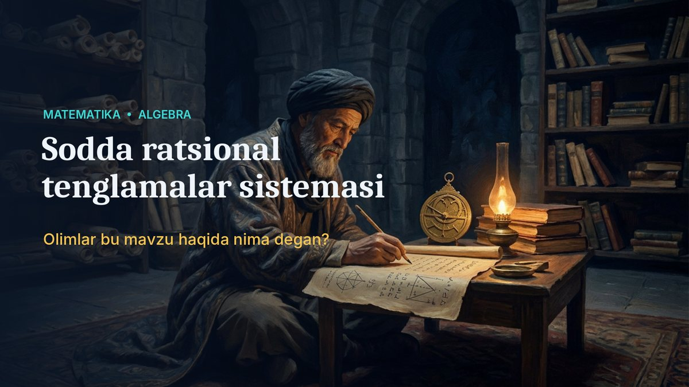

🎓 Ochiq darslar
O‘qituvchilar uchun tayyor ochiq dars ishlanmalari: slaydlar, qisqa video, olimlarning fikrlari, yechilgan misollar hamda javoblari bilan mustaqil ish.

Matematika · Algebra
Sodda ratsional tenglamalar sistemasi
Tushuncha, xossalar, 3 xil yechish usuli, olimlar fikrlari va hayotiy masala.
Yangi ochiq darslar tez orada qo‘shiladi.